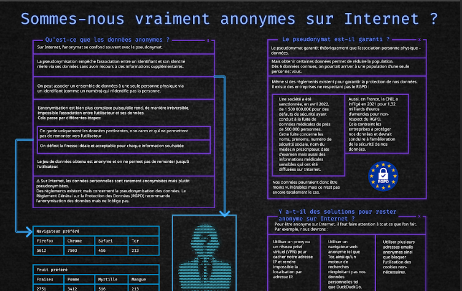

| Identifier ses aptitudes pour travailler dans une équipe | AC 1 Appréhender l'écosystème numérique |
|---|---|
| AC 2 Découvrir les aptitudes requises selon les différents secteurs informatiques | |
| AC 3 Identifier les statuts, les fonctions et les rôles de chaque membre d'une équipe pluridisciplinaire | |
| AC 4 Acquérir les compétences interpersonnelles pour travailler en équipe | |
| Situer son rôle et ses missions au sein d'une équipe informatique | AC 1 Comprendre la diversité, la structure et la dimension de l'informatique dans une organisation (ESN, DSI, ...) |
| AC 2 Appliquer une démarche pour intégrer une équipe informatique au sein d'une organisation | |
| AC 3 Mobiliser les compétences interpersonnelles pour intégrer une équipe informatique | |
| AC 4 Rendre compte de son activité professionnelle | |
| Manager une équipe informatique | AC 1 Organiser et partager une veille numérique |
| AC 2 Identifier les enjeux de l'économie de l'innovation numérique | |
| AC 3 Guider la conduite du changement informatique au sein d'une organisation | |
| AC 4 Accompagner le management de projet informatique |
L'objectif de ce projet est de réaliser une affiche pour la SAE de communication.
Affiche 